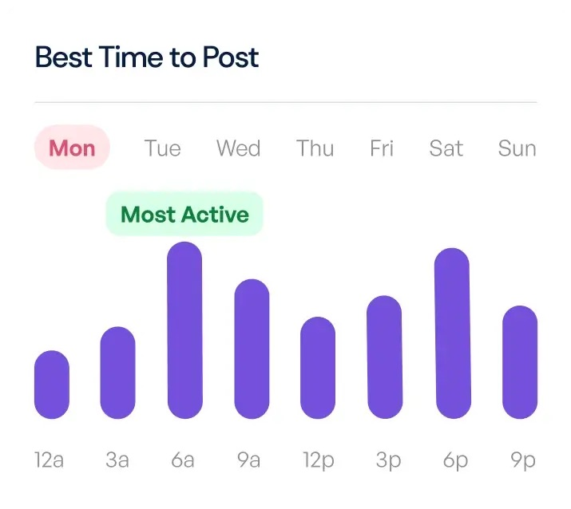
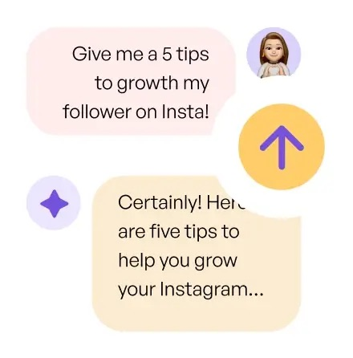

Create and Schedule content quicker.
Schedule to social media.
Optimize post timings to publish content at the perfect time for your audience.
Write your content using AI.
Manage multiple accounts and platforms.
Maintain a consistent posting schedule.
>56%
faster audience growth
Grow followers with non-stop content.